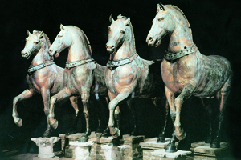

Lezione 8  Crociate
Crociate

QUARTA CROCIATA
1202-1204: La Quarta crociata, indetta da papa Innocenzo III e condotta da Baldovino di Fiandra e dai veneziani, addirittura non tocca la Terrasanta e viene sviata dai veneziani su Costantinopoli, conquistata e saccheggiata nel 1204. Dal conflitto nasce un effimero Impero latino d’Oriente.QUINTA CROCIATA
1215-1221: La Quinta crociata non consegue alcun risultato. Indetta da papa Innocenzo III, è posta sotto il comando di un rappresentante del papa, il legato apostolico, a cui i capi militari devono sottostare. Vengono sconfitti in Egitto, presso Damietta, nel 1221, prima ancora di arrivare in Terrasanta.
VENEZIA
I cavalli di San Marco, preziosa scultura in bronzo di epoca romana proveniente dall’ippodromo di Costantinopoli, fanno parte del bottino di guerra della Quarta crociata del 1204; i crociati saccheggiano la capitale dell’Impero d’oriente trasportando in Occidente molte opere di arte bizantina.